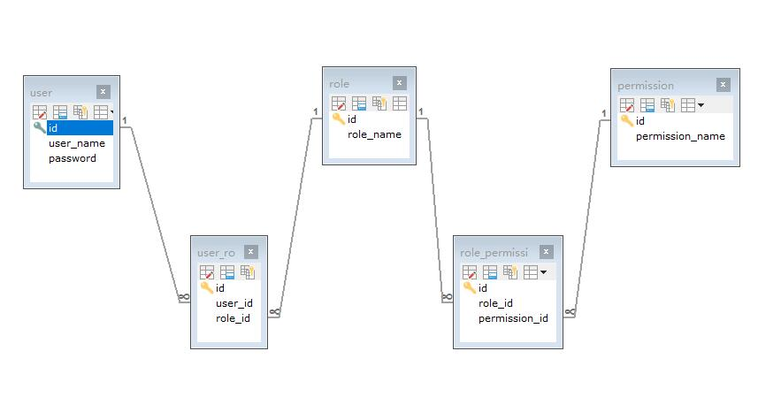

[TOC]
什么是Shiro？
- 它是一款轻量级的Java安全框架
- 提供以下服务：
- Authentication（认证）
- Authorization（授权）
- Session Management（会话管理）：并不是我们熟知的HTTP Session，而是一个独立的Session管理框架，不管是否为Web应用，都可以用这套框架。
- Cryptography（加密）：封装了许多密码学算法。
Hello Shiro
Maven依赖
1 | <!-- SLF4J --> |
提供log4j.properties
1 | log4j.rootLogger = INFO, console |
以上配置将日志输出到控制台，并配置日志输出格式。
提供一个shiro.ini
1 | [users] |
表示用户名为shiro,密码为201314。
main方法
1 | package com.laowang.shiro; |
分析此Demo
- 需要读取classpath下的shiro.ini配置文件，并通过工厂类创建SecurityManager对象，最终将其放入SecurityUtils中，供Shiro框架随时获取。
- 通过SecurityUtils获取Subject对象，其实就是当前用户，只不过被Shiro称为主体（Subject）。
- 然后使用Username与Password来创建一个UseramePasswordToken对象，然后通过调用Sbuject对象的login方法并传入token对象，让Shiro进行用户身份验认证。
- 最后可以通过subject的logout方法来注销本次Session。
在Web开发中使用Shiro
直接使用官方提供的Web模块
1
2
3
4
5
6<!-- shiro web -->
<dependency>
<groupId>org.apache.shiro</groupId>
<artifactId>shiro-web</artifactId>
<version>1.2.3</version>
</dependency>
在web.xml中添加一个Listener和一个Filter
1 | <web-app xmlns:xsi="http://www.w3.org/2001/XMLSchema-instance" |
其实就是使用EnvironmentLoaderListener来初始化SecurityManager，并通过ShiroFilter来完成认证和授权。
5个表及结构
SQL语句
1
2
3
4
5
6
7
8
9
10
11
12
13
14
15
16
17
18
19
20
21
22
23
24
25
26
27
28
29
30
31
32
33
34
35
36
37
38CREATE TABLE USER (
id INT NOT NULL AUTO_INCREMENT,
user_name VARCHAR(255),
PASSWORD VARCHAR(255),
PRIMARY KEY (`id`)
)
CREATE TABLE role (
id INT NOT NULL AUTO_INCREMENT,
role_name VARCHAR(255),
PRIMARY KEY (`id`)
)
CREATE TABLE permission (
id INT NOT NULL AUTO_INCREMENT,
permission_name VARCHAR(255),
PRIMARY KEY (`id`)
)
CREATE TABLE user_role (
id INT NOT NULL AUTO_INCREMENT,
user_id INT,
role_id INT,
PRIMARY KEY (`id`),
FOREIGN KEY (`user_id`) REFERENCES `shiro`.`user`(`id`),
FOREIGN KEY (`role_id`) REFERENCES `shiro`.`role`(`id`)
)
CREATE TABLE role_permission (
id INT NOT NULL AUTO_INCREMENT,
role_id INT,
permission_id INT,
PRIMARY KEY (`id`),
FOREIGN KEY (`role_id`) REFERENCES `shiro`.`role`(`id`),
FOREIGN KEY (`permission_id`) REFERENCES `shiro`.`permission`(`id`)
)表结构
在shiro.ini做如下配置
通过Shiro的JdbcRealm来进行认证和授权：
1
2
3
4
5
6
7
8
9
10
11
12
13
14
15
16
17
18
19
20[main]
authc.loginUrl=/login
ds=org.apache.commons.dbcp.BasicDataSource
ds.driverClassName=com.mysql.jdbc.Driver
ds.url=jdbc:mysql://localhost:3306/shiro
ds.username=work
ds.password=123456789
jdbcRealm=org.apache.shiro.realm.jdbc.JdbcRealm
jdbcRealm.datasorce=$ds
jdbcRealm.authenticationQuery=select password from user where username = ?
jdbcRealm.userRolesQuery=select r.role_name from user u,user_role ur,role r where u.id=ur.user_id and r.id=ur.role_id and u.username=?
jdbcRealm.permissionsQuery=select p.permission_name from role r,role_permission rp,permission p where r.id=rp.role_id and p.id=rp.permission_id and r.role_name =?
jdbcRealm.permissionsLookupEnabled=true
securityManager.realms=$jdbcRealm
[urls]
/=anon
/space/**=authc
分析以上配置
- 在[main]片段中，定义了一个authc.loginUrl=/login，表示要跳转的Url地址，映射后可以得到相应的login页面。
- 然后定义了一个DBCP的Datasource，用于获取JDBC数据库连接。
- 接着，定义JdbcRealm并指定Datasource，通过以下几条SQL来完成认证和授权。
- authenticationQuery：提供身份验证。
- userRolesQuery：授权验证，即查询某个用户的角色。
- permisisonsQuery：权限验证，即查询某个角色拥有的权限。
- 最后在[urls]片段中，定义了一些Url过滤规则，shiro已经提供了一些默认的过滤器，我们也可以自定义扩展自己的过滤器。
- /=anon：对于“/”请求（根目录）可以匿名访问。
- /space/**=authc：对于“/space/”开头的请求，均由authc过滤器完成。
- （一个*表示一层目录，两个**表示多层目录）
默认过滤器
过滤器名称 |功能| 配置项（及其默认值）
—|—|—
anon|确保只有未登录（匿名）的用户发送的请求才能通过|-
authc|确保只有已认证的用户发送的请求才能通过
（若未认证则跳转到登录页面）|authc.loginUrl=/login.jsp
authc.successUrl=/
authc.usernameParam=username
authc.passwordParam=password
authc.rememberMeParam=rememberMe
authc.failureKeyAttribute=shiroLoginFailure
authcBasic|提供BasicHTTP认证功能
（在浏览器中弹出一个登录对话框）|authc.Basic.applicationName=application
logout接收结束会话请求|logout.redirectUrl=/
noSessionCreation|提供No Sesison解决方案
（若有Session就会报错）|-
perms|确保只有通过特定权限的用户发送的请求才能通过|-
port|确定只有特定端口的请求才能通过|port=80
rest|提供Rest解决方案
（根据Rest Url计算权限字符串）|-
roles|确保只有拥有特定角色的用户发送的请求才能通过|-
ssl|确保只有HTTPS的请求才能通过|-
user|确保只有已登录的用户发送的请求才能通过
（包括已认证或已记住）|-Shiro注解
注解|功能
—|—
RequiresGuest|确保被注解的方法可以被匿名用户访问
RequiresUser|确保被注解的方法只能被已登录的用户访问（包括已认证或已记住）
RequiresAuthentication|确保被注解的方法只能被已认证的用户访问（不包括已记住）
RequiresRoles|确保被注解的方法仅被指定用户访问
RequiresPermissions|确保被注解的方法仅被指定权限的用户访问Shiro缓存
1
2
3
4[main]
...
cacheManager=org.apache.shiro.cache.MemoryConstrainedCacheManager
securityManager.cacheManager=$cacheManager
- （一个*表示一层目录，两个**表示多层目录）
在[main]片段中加入以上部分，就可以使用Shiro缓存。此时Shiro会在内存中会用一个Map来缓存查询结果，从而减少数据库的交互次数。Shiro也提供了EhCache扩展。
Shiro加密
1 | [main] |
数据库密码加密1
2PasswordService passwordService = new DefaultPasswordService();
String encryptPassword = passwordService.encryptPassword(plaintextPassword);